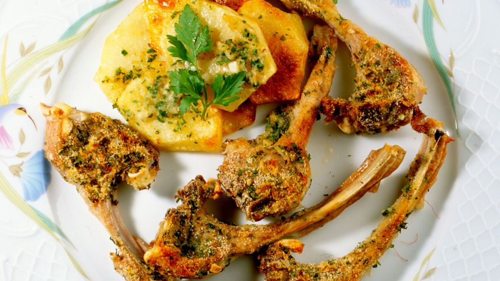
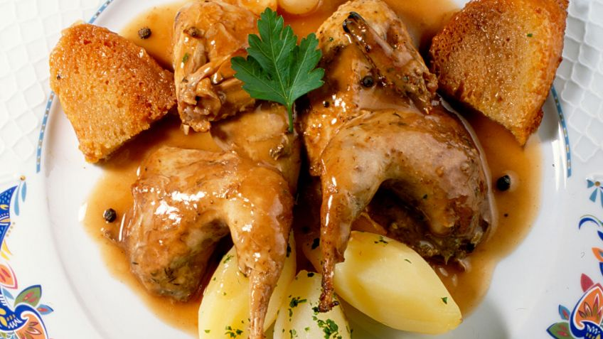
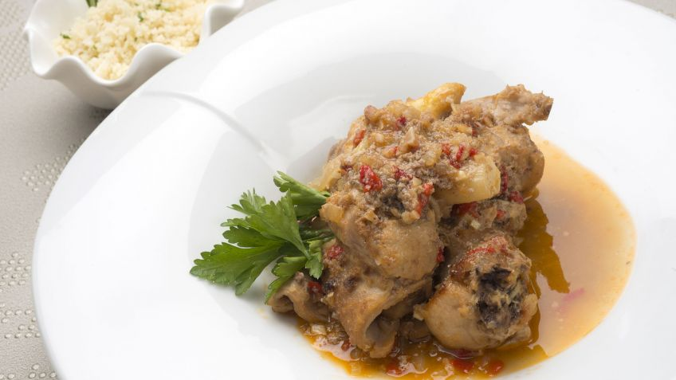
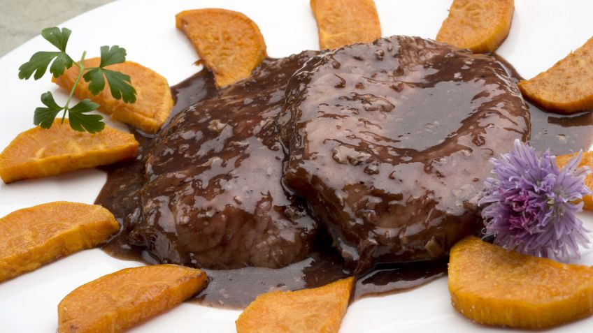

Receta de Chuletillas de cordero a la provenzal

Autor:Juan Pérez
Pela y corta las patatas en rodajas no muy gruesas y rehógalas con aceite en una sartén. Después, colócalas en una placa de horno y agrega caldo, sin llegar a cubrirlas.
Sala las chuletillas y ponlas encima de las patatas. Mezcla bien los ingredientes de la provenzal y échaselos por encima a las chuletillas.
Metelo al horno caliente a 200 grados de temperatura durante unos 20 minutos. Retira las patatas y las chuletillas y liga bien el jugo de la placa.
Para servir, coloca en los platos las chuletillas salseadas y las patatas.
Receta de Perdices con chocolate

Autor:Carlos Alberto
Esta forma de preparar las perdices es habitual en navarra y la rioja.
Limpiamos las perdices y las rehogamos en una cazuela con un poco de aceite. A continuación, añadimos el vinagre, el laurel, la pimienta, dejamos cocer 10 minutos a fuego lento.
Agregamos las cebollitas y el orégano, cubrimos con caldo y dejamos cocer una hora a fuego lento.
Transcurrido este tiempo, deshacemos el chocolate en un poco de caldo, agregamos a las perdices y dejamos cocer otros 10 minutos.
Sacamos las perdices y las colocamos sobre panes fritos. Rodeamos con las cebollitas, las patatas cocidas y acompañamos con salsa ligada.
También podemos acompañar con puré de castañas o de manzana.
Receta de Pollo Comté con manzana

Autor:Fidel Salazar
Trocea el pollo, salpimiéntalo y espolvoréalo ligeramente con harina. Ponlo en una sartén con un chorrito de aceite de oliva, a fuego vivo, hasta que esté dorado. Corta la manzana en cuatro trozos y retira el corazón. Pasa los trozos de pollo a una fuente de horno y añade la manzana. Reserva.
Despringa la sartén con 300 ml de vino blanco y dos cucharadas de mostaza fuerte. Déjalo hervir unos 2-3 minutos aproximadamente para que reduzca bien el vino blanco. Vierte la salsa sobre el pollo y hornea a 200ºC durante 30 minutos (le damos la vuelta varias veces).
Sacamos del horno y espolvoreamos 100 gramos de queso Comté rallado fino y vuelve a meter al horno durante 5 minutos hasta que se tueste el queso.
Limpia la lechuga, trocéala y alíñala al gusto.
Sirve el pollo, saltea al gusto y adorna con un poco de perejil y lechuga.
Receta de Conejo guisado con verduras y cuscús.

Autor: Shakira Ortiz
Trocea el conejo y el hígado, salpimienta y dóralos en una sartén con un chorrito de aceite. Retira el hígado y resérvalo para el majado.
Pica el pimiento, el ajo y la cebolla, y en daditos y ponlos a pochar en una cazuela con un chorrito de aceite. Sazona, agrega la hoja de laurel y cuando las verduras se pochen, incorpora el conejo. Riega con vino blanco y vierte un poco de agua. Pela los espárragos, córtalos en cilindros y agrégalos. Tapa y cocínalo durante 20 minutos.
Coloca el cuscús en un bol. Calienta el caldo en una cazuela y sazónalo. Cuando empiece a hervir, viértelo sobre el cuscús, cúbrelo con papel film y deja reposar durante 5 minutos.
Para el majado, pon el hígado del conejo y las almendras en un mortero y maja todo bien. Agrega el majado a la cazuela del conejo, mezcla bien y cocina todo junto durante 3-5 minutos.
Sirve el cuscús en un bol, espolvoréalo con un poco de perejil picado y adórnalo con unas hojas de menta y de romero. Retira la hoja de laurel de la cazuela y sirve el conejo en otro plato.
Receta de Relleno navarro
Autor: Sebastián López
Pela y pica los ajos en láminas y las cebollas en dados. Ponlos a pochar en una sartén con un chorrito de aceite Sazona. Pasa la mitad de las verduras pochadas a una cazuela y la otra mitad a una cazuelita.
Añade a la cazuela grande una pizca de orégano y el tomate triturado. Cocínalo a fuego suave durante 30 minutos. Pasa la salsa por el pasapurés y mantenla caliente hasta la hora de servir.
Pica los pimientos del piquillo y añádelos a la cazuelita pequeña. Vierte el brandy y flambéalo. De esta manera se evaporará el alcohol. Cocínalo a fuego suave durante 15 minutos. Tritúralos con la batidora eléctrica.
Retira la piel al relleno y córtalo en rodajas. Calienta un poco de aceite en una sartén, agrega los trozos de relleno y fríelos (por los 2 lados) hasta que se doren.
Sirve el relleno y acompáñalo con las 2 salsas. Adorna con unas hojas de perejil.
Receta de Redondo en salsa con boniato frito

Autor: Fernando Flores
Salpimienta el redondo. En una cazuela con un chorro de aceite fríe el redondo lentamente, durante unos 20 minutos, de forma que quede bien sellado por todos los lados.
Retíralo junto con el jugo que haya podido soltar y en esa misma cazuela, pocha el pimiento verde, las chalotas y el ajo, todo bien picado y desglasa el fondo de la cazuela con el jugo de las verduras. Cuando estén pochadas, vierte el vino, espera que evapore el alcohol, riega el agua y deja que reduzca durante unos 20 o 30 minutos.
Liga la salsa con harina de maíz refinada diluida en agua y pasa la salsa por el pasapurés. Introduce la salsa en una cazuela baja y dale un hervor. Corta el redondo en filetes, añádelos a la cazuela, retira del fuego y tapa. Deja que repose 1 minuto.
Pela, corta el boniato en medias lunas y fríelas en una sartén con bien de aceite. Escurre sobre papel absorbente y sazona.
Sirve unos filetes de redondo, salsea y acompaña con el boniato frito. Puedes decorar con unas hojas de perejil.